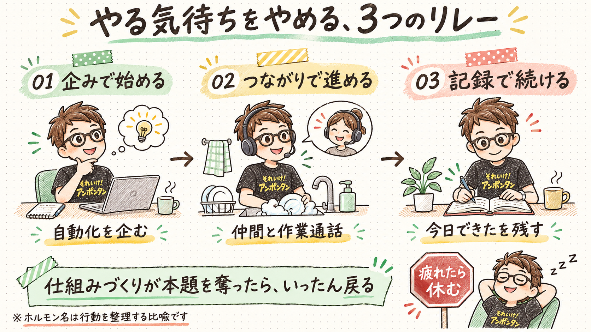

THOUGHT DEBUG / 2026.11.08
やる気待ちをやめる、僕の「3つのリレー」
着手には企み、途中にはつながり、明日には記録。僕は気合い一種類で走らない。
「やらなきゃ」と思うほど、最初の一歩が遠い。一度手をつければ進むのに、その手前で止まる。
気合いの代わりに、走り方を変える
効率化や仕組みづくりは好きなのに、地味な作業になると途端に手が止まる。だから、ずっとワクワクしたまま走ろうとするのも、根性だけで押し切るのも僕には合わない。
そこで、作業の段階ごとに助けを変えることにした。僕の中では、これを「脳内ホルモン・リレー」と呼んでいる。
ただし、ドーパミン・オキシトシン・セロトニンは、ここでは実感を整理するための呼び名。僕の脳内でそれぞれが増えたと測定したわけでも、行動と一対一に対応するという意味でもない。
企みで、始めるドーパミンと呼んでいる段階
「これをどう自動化できるだろう？」と考えると、作業が少しゲームになる。音声で残した気づきをAIに整理してもらい、HTMLにして公開する仕組みを作ったときも、最初に動いたのはこの好奇心だった。
目的は、完璧なシステムを作ることではない。まず手をつけること。初速がついたら、企みの役割はいったん終わりにする。
つながりで、進めるオキシトシンと呼んでいる段階
家事のような、どうしても避けられない単純作業。以前は嫌々やっていたけれど、仲間と作業通話をすると、会話の横で自然と手が動いたことがある。
Discordの「陽だまりの庭」など、誰かと同じ時間を過ごす場も使える。作業そのものを好きにならなくても、一緒に過ごす時間なら始めやすい。
記録で、次につなぐセロトニンと呼んでいる段階
朝5時半からのXスペース配信は、1000日以上続いている。毎日が特別に楽しいわけではない。それでも「今日もできた」と確かめられることが、次の日の足場になる。
書いたことをObsidianに残し、ときどき見返す。続ける力を、毎朝の気分だけに預けないための小さな仕掛けだ。
思考のデバッガーからの突っ込み
ここで少し意地悪な確認。仕組み化の「企み」が楽しすぎて、肝心の作業から遠回りしていないだろうか。自動化の設計図が立派でも、今日の仕事が一歩も進んでいなければ、着火剤が主役の座を奪っている。
それに、体調が悪くなるほど没頭するのは、集中力の勲章ではなく休む合図かもしれない。やる気が出ない日をすべて仕組みで突破しなくていい。疲れているなら、リレーを走る前に止まる選択もある。
一段深掘りする問い
いま止まっていることは、「始める」「途中を進める」「明日も続ける」のどこで止まっている？ その段階に合わせて、次の10分に何を一つ変えられるだろう。
図解

他者紹介用メモ
やる気が出るまで待っていると、最初の一歩がますます遠く感じませんか。僕は作業を「始める・進める・続ける」に分け、企み、仲間との時間、日々の記録をそれぞれの助けにしています。脳内ホルモンの名前はあくまで比喩。仕組みづくりに夢中で本題を忘れたり、疲れを見落としたりしないための突っ込みも添えました。